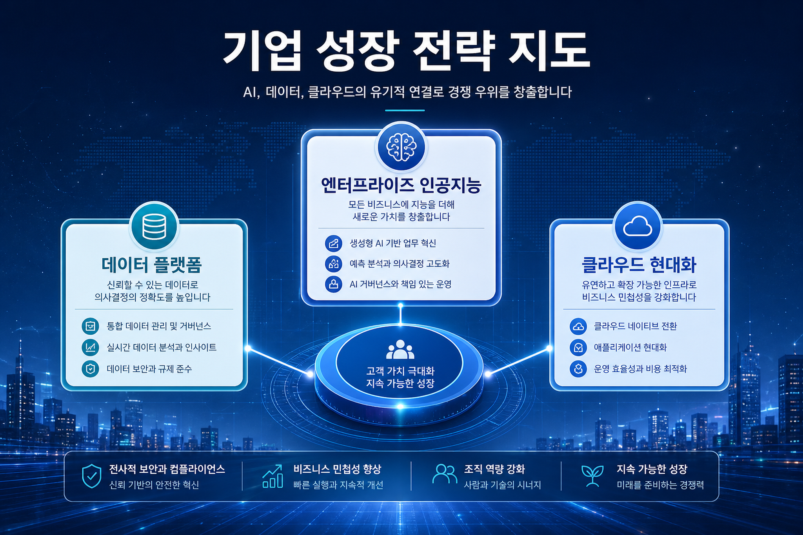
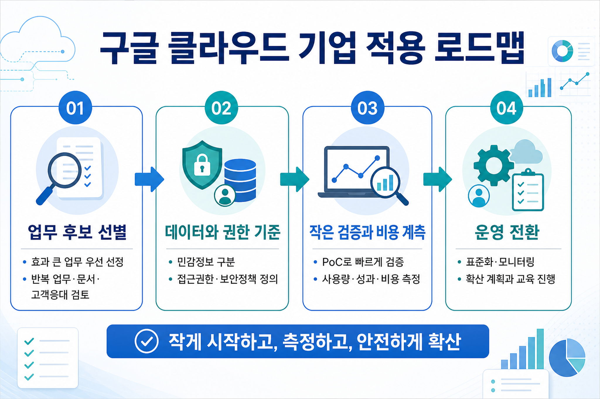
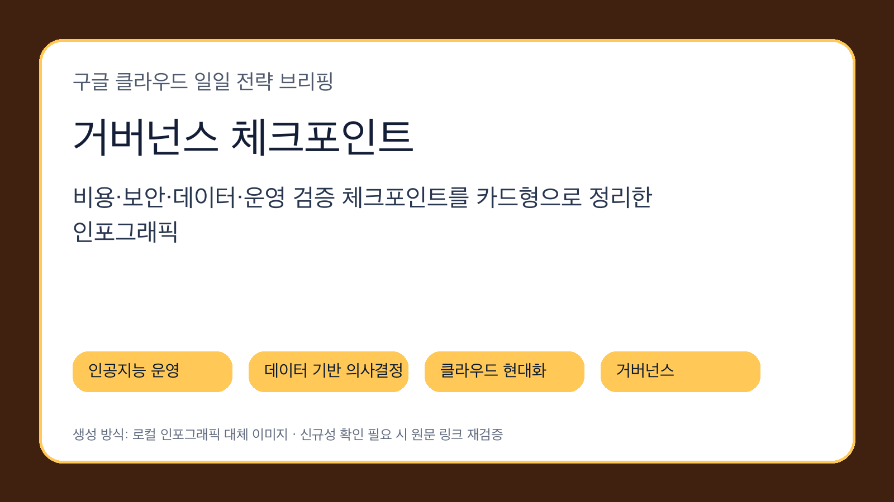

구글 클라우드 데이터베이스 블로그
스패너 그래프 알고리즘 소개
스패너 그래프 알고리즘 소개는 제미나이, 제미나이 엔터프라이즈, 빅쿼리, 스패너 관점에서 기업의 데이터 처리, 인공지능 적용, 운영 거버넌스 점검이 필요한 신호입니다. 원문 세부 기능과 제공 상태는 후속 확인이 필요합니다.
원문 보기오늘의 수집·보조 출처를 바탕으로 인공지능 운영, 데이터 의사결정, 클라우드 현대화, 보안 거버넌스를 한국 기업 관점에서 해석했습니다.
이번 실행에서 신규 저장 문서는 없었고, 최근 24시간 이내 로컬 구글 클라우드 소스 문서를 보조 입력으로 사용했습니다. 신규성은 확인 필요입니다.
이번 신호의 중심은 스패너 그래프 알고리즘 소개 · 지시에스 분석 코어로 아이스버그와 스파크 작업 최적화 · 구글 클라우드 애플리케이션 로드 밸런서 마이그레이션 실전 가이드입니다. 단순 기능 발표로 보기보다, 기업이 인공지능을 실제 업무에 배치할 때 필요한 데이터 기반, 식별자 통제, 운영 관측성, 비용 검증 체계를 함께 설계해야 한다는 메시지로 읽어야 합니다.

구글 클라우드 데이터베이스 블로그
스패너 그래프 알고리즘 소개는 제미나이, 제미나이 엔터프라이즈, 빅쿼리, 스패너 관점에서 기업의 데이터 처리, 인공지능 적용, 운영 거버넌스 점검이 필요한 신호입니다. 원문 세부 기능과 제공 상태는 후속 확인이 필요합니다.
원문 보기구글 클라우드 데이터 분석 블로그
지시에스 분석 코어로 아이스버그와 스파크 작업 최적화는 제미나이, 제미나이 엔터프라이즈, 빅쿼리, 알로이디비 관점에서 기업의 데이터 처리, 인공지능 적용, 운영 거버넌스 점검이 필요한 신호입니다. 원문 세부 기능과 제공 상태는 후속 확인이 필요합니다.
원문 보기구글 클라우드 코리아 블로그
구글 클라우드 애플리케이션 로드 밸런서 마이그레이션 실전 가이드는 제미나이, 제미나이 엔터프라이즈, 클라우드 아머 관점에서 기업의 데이터 처리, 인공지능 적용, 운영 거버넌스 점검이 필요한 신호입니다. 원문 세부 기능과 제공 상태는 후속 확인이 필요합니다.
원문 보기모델과 도구 호출이 늘수록 식별자, 권한, 감사, 비용 배부가 제품 설계의 일부가 됩니다. 기술 도입 검토는 성능 비교보다 운영 가능한 통제 구조를 먼저 보아야 합니다.
분석, 스트리밍, 데이터베이스, 검색증강생성은 각각 분리된 도구가 아니라 에이전트가 근거를 만들고 업무를 실행하는 공통 기반으로 결합됩니다.
기업 적용 단계에서는 사용자·서비스 계정·도구·데이터 접근 범위를 명시하고, 로그와 승인 흐름을 남기는 구조가 필수입니다.

반복성이 높고 검증 가능한 산출물이 있는 업무부터 고릅니다. 고객 데이터나 금전 영향이 큰 업무는 승인 단계를 유지합니다.
어떤 데이터에 접근하고 어떤 도구를 호출할 수 있는지 역할별로 분리합니다. 원문 기능명보다 내부 통제 기준을 먼저 문서화합니다.
사용자 그룹을 제한해 품질, 지연, 토큰·검색·도구 호출 비용을 함께 측정합니다. 성공 기준은 정확도뿐 아니라 감사 가능성입니다.
로그, 장애 대응, 권한 회수, 프롬프트·데이터 변경 승인 절차를 만든 뒤 확산합니다.
한국 기업은 개인정보, 내부망, 계정 권한, 비용 배부, 외주·내재화 역할 경계가 동시에 얽혀 있습니다. 따라서 구글 클라우드 기능 도입은 단일 서비스 선택이 아니라 현업 책임자, 보안, 데이터, 플랫폼 운영 조직이 함께 보는 운영모델 설계 과제입니다.
| 영역 | 점검 질문 | 권장 대응 |
|---|---|---|
| 보안 | 에이전트와 사용자가 어떤 데이터에 접근하는가 | 역할 기반 접근, 감사 로그, 승인 흐름을 우선 설계 |
| 비용 | 모델·검색·도구 호출 비용이 업무별로 보이는가 | 프로젝트·업무 단위 태깅과 예산 알림을 설정 |
| 품질 | 출력 오류와 근거 부족을 어떻게 검출하는가 | 평가 세트, 회귀 테스트, 사람 검토 기준을 운영 |
| 데이터 | 검색증강생성과 분석 데이터가 최신성과 권한을 지키는가 | 데이터 카탈로그, 소유자, 보존 정책을 연결 |

| 발행일 | 출처 | 제목 | 기술 키워드 |
|---|---|---|---|
| 2026-06-02 | 구글 클라우드 데이터베이스 블로그 | 스패너 그래프 알고리즘 소개 | 제미나이, 제미나이 엔터프라이즈, 빅쿼리, 스패너 |
| 2026-06-02 | 구글 클라우드 데이터 분석 블로그 | 지시에스 분석 코어로 아이스버그와 스파크 작업 최적화 | 제미나이, 제미나이 엔터프라이즈, 빅쿼리, 알로이디비 |
| 2026-06-01 | 구글 클라우드 코리아 블로그 | 구글 클라우드 애플리케이션 로드 밸런서 마이그레이션 실전 가이드 | 제미나이, 제미나이 엔터프라이즈, 클라우드 아머 |